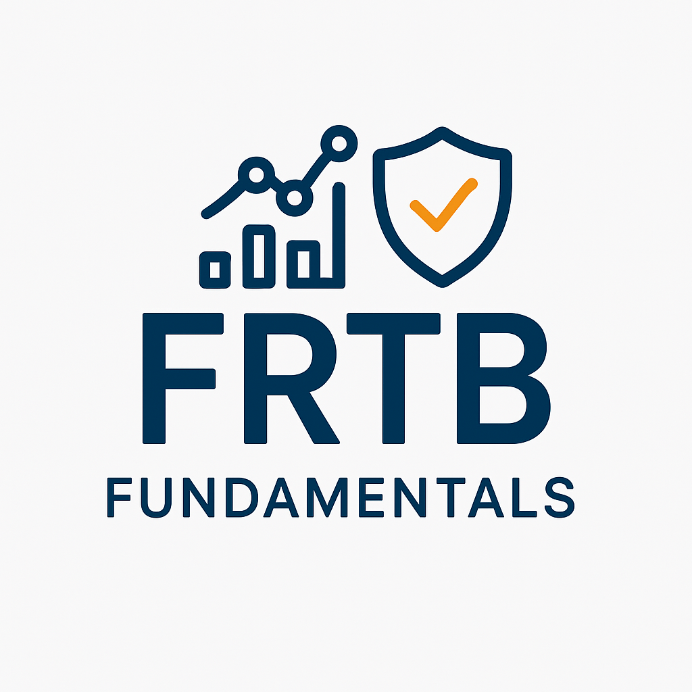

Classify the book
Understand the trading-book boundary, classification rules, restrictions, and capital consequences.

TG Investments and Research FRTB
Market Risk / Capital / Regulation
Build a working understanding of the Fundamental Review of the Trading Book, from the trading-book boundary through SA, IMA, modellability, P&L attribution, and implementation.
FRTB25_AUG_2026Offer ends August 31What you will build
The course connects the regulatory intent to the calculations, data, governance, and desk-level consequences. You will see how SA and IMA differ, where the difficult tests sit, and what implementation demands from a bank.
Understand the trading-book boundary, classification rules, restrictions, and capital consequences.
Follow sensitivities, buckets, correlations, GIRR, default risk, and residual risk through the Standardized Approach.
Connect expected shortfall, modellability, NMRFs, backtesting, and P&L attribution.
Translate the framework into data, systems, governance, validation, and operating-model requirements.

Your instructor
Market-risk and capital-markets practitioner
Tim brings more than 25 years of experience across capital markets, risk, quantitative analysis, and financial technology. He explains the regulatory architecture in the language of products, sensitivities, models, data, and the teams that must make FRTB work.
The curriculum
Start with scope and classification, work through SA and IMA, then confront the model tests, liquidity adjustments, and implementation choices.
Understand why FRTB was introduced, its regulatory objectives, institutional impact, and implementation timeline.
Study definitions, boundary conditions, restrictions, capital treatment, and practical classification examples.
Work through the SA architecture, delta, vega, curvature, capital aggregation, default risk, and residual risk.
Follow a reconciled Excel calculation for a single SOFR swap from sensitivities through the GIRR capital charge.
Convert the Excel logic to Python and step through the General Interest Rate Risk algorithm and validation.
Cover IMA approval, expected shortfall, model validation, stress testing, and scenario analysis.
Understand eligibility criteria, real-price observations, data quality, and the modellable/non-modellable boundary.
Identify NMRFs and study stress-scenario capital charges, data constraints, and practical cases.
Follow RTPL and HPL comparison, test methodology, interpretation, failure consequences, and remediation.
Connect liquidity horizons and scaling adjustments to expected shortfall and capital outcomes.
Assess data, infrastructure, technology, organization, process change, and the cost-benefit tradeoffs.
Review ISDA and EY adoption findings, industry trends, implementation patterns, and future developments.
Built for implementation
Connect regulatory text to sensitivities, capital calculations, model tests, and governance.
Understand expected shortfall, modellability, P&L attribution, validation, and data requirements.
See where the framework creates infrastructure, lineage, aggregation, and control demands.
Build a portable framework for assessing implementations across institutions.
Student perspective
"SA and IMA are very well explained. It is concise but comprehensive, gives the big picture, and gets into the details."
"The material is well organized and gives a clear understanding of SA, IMA, and the trading-book and banking-book distinction."
"Just the right detail to understand the regulation. The risk sensitivities, model validation, P&L attribution, Excel reconciliation, and Python code are great."
August 2026 course offer
Enroll through Udemy for lifetime access to all 12 modules, Excel and Python examples, practical calculations, future updates, instructor support, and a certificate of completion.
Before you enroll
The course starts with the framework and builds toward quantitative calculations, model tests, and real implementation concerns.
A basic understanding of banking operations and market-risk concepts is helpful but not required. The course starts with fundamentals.
You receive lifetime access to all course materials and future updates through Udemy.
Yes. The course covers both approaches, including calculations, model tests, approval considerations, and practical implementation guidance.
Yes. The course includes a reconciled SOFR swap example in Excel, Python implementation, sample calculations, and implementation cases.
Yes. The course provides a framework that can be applied across banks, implementation programs, assurance reviews, and advisory engagements.
Navigate the rule
Connect regulatory design, calculations, models, data, and implementation in one course.
Start the course